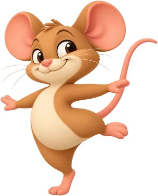

Bouquin mène l’enquête · Recherche · Corrigé
Lis et joue une première fois. Puis garde le livre ouvert : retourne dans les passages pour explorer d’autres chemins.
Explore tous les chemins de « Qui a pris le livre ? » jusqu’au couloir noir. Écris les noms proposés dans les cases. Utilise chaque nom une fois. n° 24
Scènes à placer : Pacha le chat ? · Le couloir noir · Cracher du feu · Jacasse la pie ? · Voler · La porte fermée · Raté : il retombe · Miette la souris ? · Passer dessous
Une case représente une scène. Une flèche indique où le récit peut continuer.
Quel choix permet de passer directement de la porte au couloir ? n° 15
Pousser une chaise.Quel choix peut ajouter une scène en cas d’échec ? Pourquoi ? n° 15
Voler : si le dé donne 1 ou 2, Bouquin retombe.Colorie les cases où plusieurs chemins se rejoignent.
Colorier « La porte fermée » et « Le couloir noir ». Les trois suspects peuvent être intervertis, ainsi que « Passer dessous » et « Cracher du feu ».
Si les chemins ne se rejoignaient jamais, faudrait-il écrire plus ou moins de scènes ? Pourquoi ?
Plus de scènes : chaque branche continuerait séparément. En se rejoignant, les chemins partagent une même suite.« Bouquin descend de l’étagère. » n° 1
« À ton avis, qui a pris le livre ? » n° 24
Dans cette histoire, qui est le héros ? le lecteur (« tu »)un personnage (« il » ou « elle »)
Le récit est au : présentpassé
Dans la seconde phrase, « ton » désigne le lecteur.
Bouquin mène l’enquête · Recherche · Corrigé
Observe cet extrait. Appuie-toi sur ses indices pour expliquer ce que tu choisirais.
3
Peu à peu, les yeux de Bouquin s’habituent au noir. Par terre, dans la poussière, il découvre une longue trace : Miette a traîné le livre jusqu’ici. Il doit être bien lourd pour elle ! Bouquin la suit sur la pointe des pattes, jusqu’au bout du couloir. Là, le concierge a passé le balai : la trace s’arrête net.
Bouquin regarde autour de lui. Trois chemins s’offrent à lui. L’escalier monte à l’étage. Juste devant, c’est la loge du concierge, où habite Pacha. Et sur sa droite, il y a la porte de la bibliothèque.
Monter l’escalier : va au 16.
Aller à la loge du concierge : va au 9.
Entrer dans la bibliothèque : va au 2.
Souligne les choix. Dans chaque choix, entoure le numéro qui indique où continuer.
Les choix se trouvent après le récit.
Sur un livre imprimé, que fais-tu après avoir choisi ?
Je vais à la scène qui porte le numéro associé à mon choix.Le numéro du renvoi est-il forcément le numéro d’une page du livre ? ouinon
Le renvoi indique le numéro d’une scène, qui peut être différent du numéro de la page. En lecture en ligne, on clique sur le choix.
Pour chaque choix :
a. Coche « bon » ou « mauvais ».
b. Cherche les indices dans l’extrait et surligne-les.
c. Explique pourquoi tu ferais ce choix ou non.
Monter l’escalier
bonmauvais
Je ne monterais pas : le livre semble trop lourd pour Miette.Aller à la loge du concierge
bonmauvais
Je n’irais pas : Miette éviterait le chat qui habite dans la loge.Entrer dans la bibliothèque
bonmauvais
J’irais : c’est la piste la plus probable si on écarte les deux autres.On juge ici les pistes pour retrouver Miette. Accepter toute formulation qui relie le choix aux indices : le poids du livre, la présence de Pacha, puis l’élimination des deux autres pistes.
Bouquin mène l’enquête · Recherche · Corrigé
Certains choix se préparent en observant ou en se souvenant. Pour d’autres, il faut tenter sa chance.
Sur le bureau · Lis l’extrait. n° 24
Dans cette poudre, Bouquin découvre de toutes petites traces de pattes, avec un long trait fin qui court entre elles.
Souligne l’indice. Quel suspect te fait-il choisir ? Explique.
Miette : le long trait fait penser à la queue de la souris.Au pied de la lampe · Souviens-toi du début du livre. n° 17
Au pied de la lampe, Bouquin découvre trois pistes. La première est semée de miettes de papier bleu, la deuxième de feuilles de classeur, la troisième de miettes de papier rouge.
Je suivrais les miettes rouges.
Quel détail lu plus tôt t’aide à choisir ? n° 1
Le livre de la maîtresse est rouge.Dans le couloir noir · Retourne dans le livre. n° 10
Quel indice avertit Bouquin qu’allumer la lumière est risqué ?
La télévision et sa lueur bleue indiquent que le concierge est encore là.Faire préciser le lien à l’oral : la lumière peut attirer le concierge, qui risque de découvrir Bouquin.
Avant de choisir de voler vers la poignée, sait-on déjà que Bouquin vole mal ? Quel passage nous l’apprend ?
Oui. Au début, Jacasse se moque de lui : ses ailes sont trop petites pour bien voler.Relis ensuite le passage où Bouquin vole vers la poignée, puis complète le tableau. n° 23
| Résultat du dé | Ce qui arrive à Bouquin |
|---|---|
| 1 ou 2 | Il retombe. |
| 3, 4, 5 ou 6 | Il atteint la poignée et ouvre la porte. |
À l’oral. Pourquoi peut-on dire que voler est un choix risqué ?
La réussite n’est pas certaine : le dé peut faire échouer Bouquin. En cas de chute, il perd du temps.
Bouquin mène l’enquête · Recherche · Corrigé
Observe le compteur, compare les fins, puis donne ton avis sur la façon de jouer.

Voici une règle du livre. Applique-la dans les deux situations du tableau : calcule le nouveau temps, puis coche la suite.
Ajoute 1 à ton temps.
Si ton temps est à 3, va au 20. Sinon, va au 2.
Ici, au 20, Bouquin arrive trop tard. Au 2, l’enquête continue.
| Temps avant | Temps après + 1 | La suite à suivre |
|---|---|---|
| 1 | 2 | continuerarriver trop tard |
| 2 | 3 | continuerarriver trop tard |
Le compteur augmente quand Bouquin perd du temps. Il ne représente pas le temps qu’il lui reste.
Retourne dans le livre pour découvrir les deux fins. Pour chacune, indique ce qui arrive au livre de la maîtresse. n° 22 · n° 20
Après la fin où Bouquin arrive trop tard, que peux-tu faire pour essayer un autre chemin ?
Recommencer au début et faire d’autres choix.À l’oral. Tous les mauvais choix font-ils finir l’aventure immédiatement ? Appuie-toi sur un exemple.
Non. Un détour peut seulement coûter du temps : on continue tant que le compteur n’a pas atteint 3.
Qu’est-ce qui t’a plu ou déplu dans la façon de jouer ? Donne un exemple du livre.
Réponse personnelle, positive ou négative, justifiée par un exemple du livre.